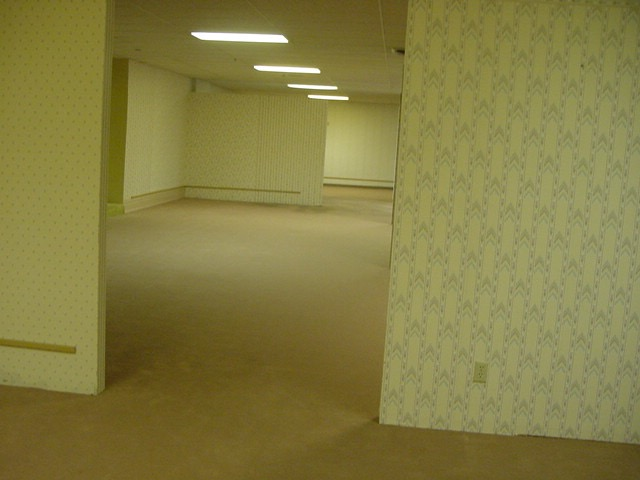

The Networked Image
Unearth Here.
The economy of poor images, with its immediate possibility of worldwide distribution and its ethics of remix and appropriation, enables the participation of a much larger group of producers than ever before.
Poor images are thus popular images—images that can be made and seen by the many. They express all the contradictions of the contemporary crowd: its opportunism, narcissism, desire for autonomy and creation, its inability to focus or make up its mind, its constant readiness for transgression and simultaneous submission.
Crawl Out Here.
Fall Farther Here.